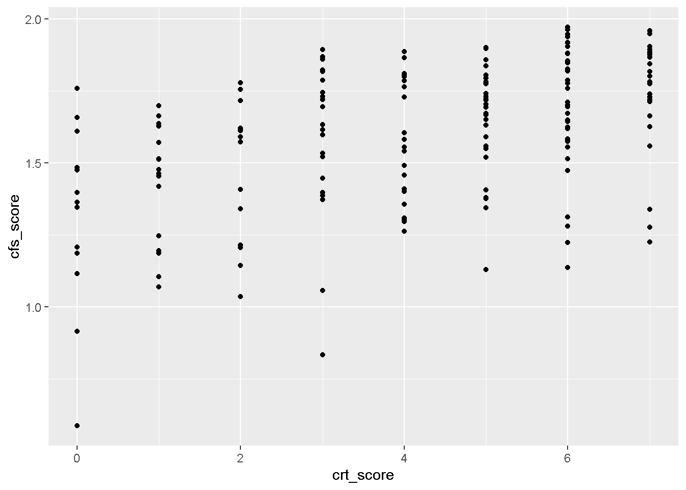

This exam is optional for PSYC 2020 and required for PSYC 6022. It will primarily focus on using R to analyze data, but you will need to synthesize information you have learned in both lecture and lab to complete it properly. If you complete this exam in PSYC 2020, it will replace your lowest exam grade (unless all of your other exam scores are higher than your score on this one).
You must complete this exam using RMarkdown. Your final submission should include both a .rmd file as well as a knitted word, PDF, or html file. You should be able to complete the entire exam using RMarkdown.
You may use any resources at your disposal to figure out how to get the answers, including lecture notes, lab materials, textbooks, and internet searches. Be careful using ChatGPT for assistance. It can help with certain coding problems, but it often makes mistakes, and you must demonstrate that you understand the procedures you are using and how to properly interpret them.
You must complete this on your own, and the final product must be your work and your work alone. You cannot seek help from classmates or other people besides course instructors (Dingjing Shi, Alina Tran, Jess Helmer). Any Ed Discussion questions about the content of this exam that are not strictly procedural (e.g., due date) should be asked privately to instructors only.
There are three sections each with 9 required questions. In total, each section is worth 32 points. That means the total score for the required questions is only worth 96 points.
For all questions involving statistical significance, assume \(\alpha = .05\)
Import libraries you’d like to use in this assignment here.
library(tidyverse)
── Attaching core tidyverse packages ──────────────────────── tidyverse 2.0.0 ──
✔ dplyr 1.1.4 ✔ readr 2.1.5
✔ forcats 1.0.0 ✔ stringr 1.5.1
✔ ggplot2 4.0.0 ✔ tibble 3.2.1
✔ lubridate 1.9.3 ✔ tidyr 1.3.1
✔ purrr 1.0.2
── Conflicts ────────────────────────────────────────── tidyverse_conflicts() ──
✖ dplyr::filter() masks stats::filter()
✖ dplyr::lag() masks stats::lag()
ℹ Use the conflicted package (<http://conflicted.r-lib.org/>) to force all conflicts to become errors
Part 1
About the data
This section uses one of Mark Himmelstein’s datasets, based on a study that was conducted in the end of 2020. In this study, participants were recruited to forecast several different questions about economic and geopolitical events. An example of the types of questions forecasted is shown below.
One way of measuring forecasting accuracy is called the “Brier Score”. Brier Scores range from 0 to 2, and lower scores refer to more accurate forecasts. In our study, we had people make forecasts about several different questions on multiple occasions several weeks apart, and then looked at their mean Brier Scores.
We also wanted to determine if we could assess how well people reasoned about the laws of probability, which we called “coherence”. To do this, we used a scale that included items such as this (see next page).
In this example, a coherent response would correctly identify that the probability of an all-time low temperature in Chicago within the next five years would be at least as large as an all-time low temperature in Chicago in three years (since every time the latter is true, the former is also true), and the probability of an all-time low temperature within three years would be at least as large as within the next year.
We also collected several other variables related to people’s reasoning ability, which are described below (research papers describing each of these scales are included with the exam, but are optional reading). The variables in the dataset forecasting data.csv are described below:
variable
description
ID
Participant identifier
brier1
Average Brier Score (lower = more accurate) at Time 1
brier2
Average Brier Score (lower = more accurate) at Time 2
bn_score
Berlin Numeracy Score (Measure of Numerical Reasoning, higher = better)
crt_score
Cognitive Reflection Test Score (A different measure of reasoning, higher = better)
ns_score
Number Series Score (Numerical Pattern Matching, higher = better)
cfs_score
Coherence Score (Ability to follow the logic of probability, higher = better)
You can also view our study pre-registration on the Open Science Foundation website for more info, as well as two papers titled The wisdom of many in few: Finding individuals who are as wise as the crowd and Measuring probabilistic coherence to identify superior forecasters on to Canvas (also purely optional reading).
Import the data forecasting data.csv below. Use three functions get a sense of the data.
dat <- rio::import(here::here("exam", "forecasting data.csv"))head(dat)
Research Question 1: We want to understand how related our new measure of coherence about probability (cfs_score) is to other variables that involve reasoning ability.
1. Create a scatterplot with cfs_score on the y-axis and crt_score on the x-axis. (4 points)
dat |>ggplot(aes(y = cfs_score, x = crt_score)) +geom_point()

2. Use the cor() function to find the correlation coefficient between cfs_score and crt_score. (3 points)
cor(dat$cfs_score, dat$crt_score)
[1] 0.4591212
4. Generate a correlation matrix between cfs_score, bn_score, crt_score, and ns_score. Which relationships are the strongest? Which are the weakest? (4 points)
dat |>select(cfs_score, bn_score, crt_score, ns_score) |>cor()
5. Conduct a simple linear regression using crt_score to predict cfs_score and show the summary table. (3 points)
m <-lm(cfs_score ~ crt_score, data = dat)summary(m)
Call:
lm(formula = cfs_score ~ crt_score, data = dat)
Residuals:
Min 1Q Median 3Q Max
-0.78679 -0.13219 0.03273 0.16295 0.38608
Coefficients:
Estimate Std. Error t value Pr(>|t|)
(Intercept) 1.372788 0.036229 37.892 < 2e-16 ***
crt_score 0.053186 0.007824 6.798 1.65e-10 ***
---
Signif. codes: 0 '***' 0.001 '**' 0.01 '*' 0.05 '.' 0.1 ' ' 1
Residual standard error: 0.2244 on 173 degrees of freedom
Multiple R-squared: 0.2108, Adjusted R-squared: 0.2062
F-statistic: 46.21 on 1 and 173 DF, p-value: 1.654e-10
6. Interpret the intercept and slope coefficient for crt_score from this model. Include whether the effect was significant or not.
For every unit increase in crt_score, the expected increase in cfs_score is 0.05. This was a significant difference (p < .001). When crt_score is at zero, the expected value of cfs_score is 1.37. This was significantly different from zero (p < .001).
7. What are the predicted cfs_scores for crt_scores of 2, 4, and 6?
8. Create a dataframe that has theoretical crt_scores sequenced (with seq()) from 0–7. Add a new column that contains predicted values of cfs_score for each of those theoretical values. Use that new dataframe to add a layer onto your previous scatterplot that contains the prediction line for this model.
6. Create two new variables: one representing cfs_score converted to \(z\)-scores, and another representing crt_score converted to \(z\)-scores. (4 points)
dat <- dat |>mutate(cfs_score_z = (cfs_score -mean(cfs_score)) /sd(cfs_score),crt_score_z = (crt_score -mean(crt_score)) /sd(crt_score))
Part 2
About the data
This section uses the same dataset as Part 1.
Research Question 2: Forecasts often tend to become easier as time passes. For example, forecasting the weather a week from today is relatively difficult. But if we wait six days, that same forecast will become about the weather tomorrow, and will be much easier. So we want to determine if people’s forecasting accuracy at Time 2 is different than at Time 1.
1. If we want to determine whether the difference between people’s Brier scores at Time 1 and Time 2 are significantly different from zero. State the null and alternative hypothesis.
\(H_0\): \(\mu_{t_1} = \mu_{t_2}\)
\(H_1\): \(\mu_{t_1} \neq \mu_{t_2}\)
2. What statistical procedure would we use? Include the type of test you would conduct, and whether the test would be one or two-tailed. Briefly justify your choice of test (1–2 sentences) (3 points).
I would use a two-tailed paired sample t-test. The two timepoints are linked because they are forecasts made by the same people, and we have no specific directional hypothesis.
3. Calculate the mean of brier1, the mean of brier2, and the difference between the means (4 points). Display the results of each of these calculations.
Paired t-test
data: dat$brier1 and dat$brier2
t = 10.395, df = 174, p-value < 2.2e-16
alternative hypothesis: true mean difference is not equal to 0
95 percent confidence interval:
0.09618695 0.14127523
sample estimates:
mean difference
0.1187311